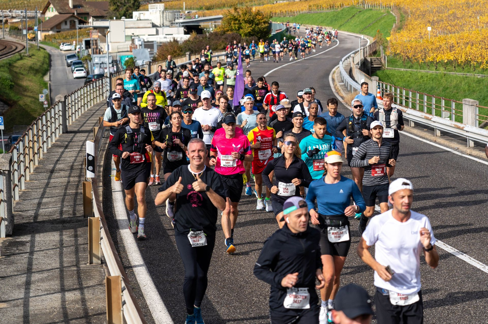

Concept non ufficiale — mockup esplorativo a titolo volontario
Menu

Stampa
Contatti e risorse media (pagina esempio).
Photo : Lausanne Marathon
Esempio
Media kit and accreditation flows would live here. For now, use the official contact.
Official contact →